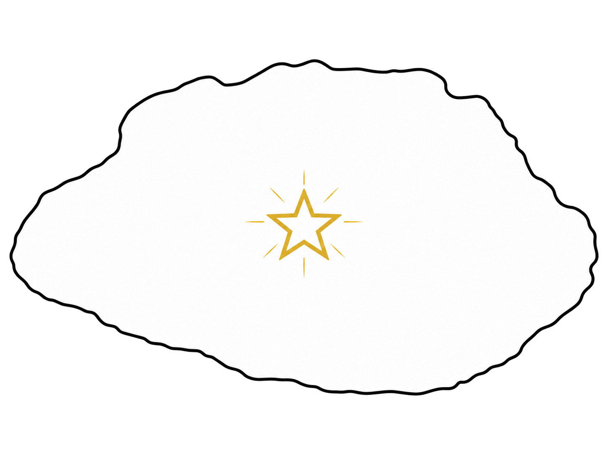

해석 · 가설
INTERPRETATION 01
풍요·다산
일부 연구에서는 성혈을 풍요·다산과 관련된 것으로 해석했습니다.

돌에 새겨진 흔적
고인돌의 별자리
별을 짧게 누르면 이야기가 열리고, 별을 누른 채 끌었다 놓으면 탄성처럼 튕깁니다. 빈 공간 드래그는 회전, 휠은 확대·축소입니다.
02 / MATTER & TRACES
우리는 이 돌을 어떻게 지각하는가? 눈앞의 물질과 그 표면에 축적된 시간을 함께 바라봅니다.
돌은 시간에 저항하지 않는다. 시간을 담고 있을 뿐이다.
03 / REACTIVATION · INTERPRETATION
다시 호출되는 돌
INTERPRETATION 01
일부 연구에서는 성혈을 풍요·다산과 관련된 것으로 해석했습니다.